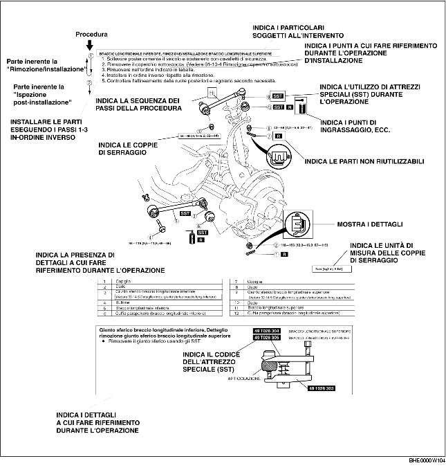

• Questo manuale contiene tutte le procedure necessarie per l'assistenza del veicolo. Le procedure si dividono nelle cinque operazioni base seguenti:
• Le descrizioni delle operazioni più semplici, la cui esecuzione è intuitiva (esempio, rimozione/installazione di parti semplici, sollevamento del veicolo, pulizie e ispezioni visive) sono state omesse.
1. La maggior parte delle operazioni di riparazione inizia con una figura che fornisce una panoramica della parte in esame. In essa si identificano i componenti, si mostra come avviene il montaggio delle parti e si descrivono le ispezioni visive. In ogni caso, le istruzioni fornite riguardano solo quelle procedure di rimozione/installazione che devono essere eseguite secondo una determinata metodologia.
2. Nella vista panoramica vengono indicati i materiali di consumo, le coppie di serraggio ed i simboli che identificano olio, grassi e sigillanti. Vengono inoltre indicati i simboli che identificano le parti che richiedono l'utilizzo di attrezzi speciali.
3. I passi procedurali sono numerati, ed il numero che contraddistingue ciascuno di essi è lo stesso numero che identifica sulla figura la parte trattata. Occasionalmente, in riferimento ad una procedura si possono trovare puntualizzazioni importanti o informazioni supplementari. È importante fare riferimento a queste informazioni durante le operazioni.

• Vengono usati otto simboli per identificare oli, grassi, fluidi e sigillanti, nonché l'utilizzo di SST o strumenti equivalenti. Questi simboli mostrano i punti di applicazione o di utilizzo di tali materiali all'interno della procedura.
• In questo manuale si possono trovare un certo numero di informazioni con le intestazioni Attenzione, Avvertenza, Nota, Specifiche e Limiti superiori e inferiori.